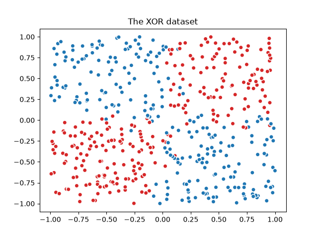
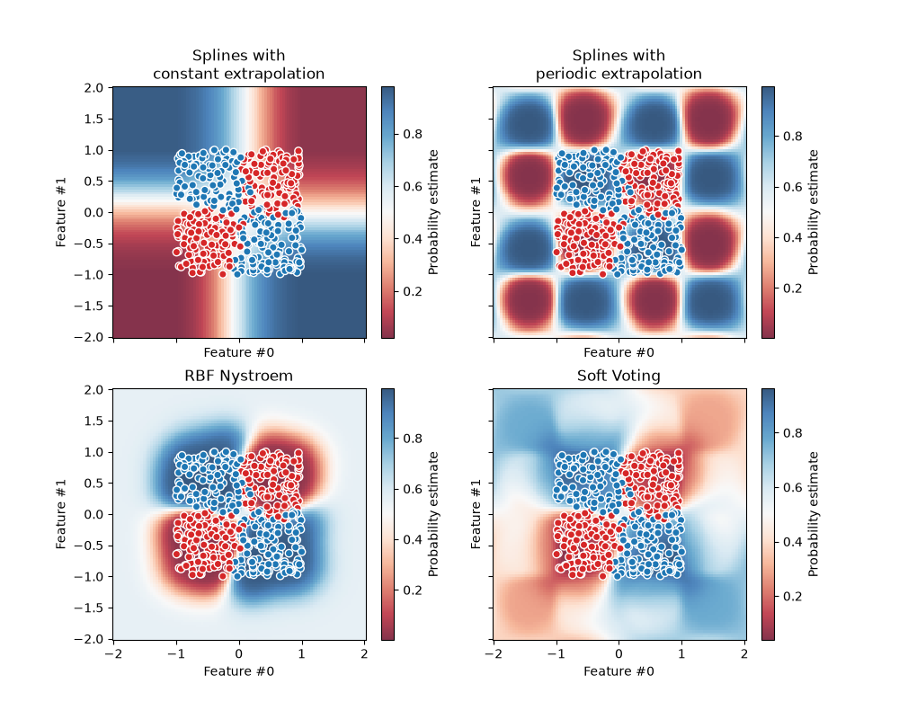

Note
Go to the end to download the full example code or to run this example in your browser via JupyterLite or Binder.
Visualizing the probabilistic predictions of a VotingClassifier#
Plot the predicted class probabilities in a toy dataset predicted by three
different classifiers and averaged by the VotingClassifier.
First, three linear classifiers are initialized. Two are spline models with
interaction terms, one using constant extrapolation and the other using periodic
extrapolation. The third classifier is a Nystroem
with the default “rbf” kernel.
In the first part of this example, these three classifiers are used to
demonstrate soft-voting using VotingClassifier with weighted
average. We set weights=[2, 1, 3], meaning the constant extrapolation spline
model’s predictions are weighted twice as much as the periodic spline model’s,
and the Nystroem model’s predictions are weighted three times as much as the
periodic spline.
The second part demonstrates how soft predictions can be converted into hard predictions.
# Authors: The scikit-learn developers
# SPDX-License-Identifier: BSD-3-Clause
We first generate a noisy XOR dataset, which is a binary classification task.
import matplotlib.pyplot as plt
import numpy as np
import pandas as pd
from matplotlib.colors import ListedColormap
n_samples = 500
rng = np.random.default_rng(0)
feature_names = ["Feature #0", "Feature #1"]
common_scatter_plot_params = dict(
cmap=ListedColormap(["tab:red", "tab:blue"]),
edgecolor="white",
linewidth=1,
)
xor = pd.DataFrame(
np.random.RandomState(0).uniform(low=-1, high=1, size=(n_samples, 2)),
columns=feature_names,
)
noise = rng.normal(loc=0, scale=0.1, size=(n_samples, 2))
target_xor = np.logical_xor(
xor["Feature #0"] + noise[:, 0] > 0, xor["Feature #1"] + noise[:, 1] > 0
)
X = xor[feature_names]
y = target_xor.astype(np.int32)
fig, ax = plt.subplots()
ax.scatter(X["Feature #0"], X["Feature #1"], c=y, **common_scatter_plot_params)
ax.set_title("The XOR dataset")
plt.show()

Due to the inherent non-linear separability of the XOR dataset, tree-based models would often be preferred. However, appropriate feature engineering combined with a linear model can yield effective results, with the added benefit of producing better-calibrated probabilities for samples located in the transition regions affected by noise.
We define and fit the models on the whole dataset.
from sklearn.ensemble import VotingClassifier
from sklearn.kernel_approximation import Nystroem
from sklearn.linear_model import LogisticRegression
from sklearn.pipeline import make_pipeline
from sklearn.preprocessing import PolynomialFeatures, SplineTransformer, StandardScaler
clf1 = make_pipeline(
SplineTransformer(degree=2, n_knots=2),
PolynomialFeatures(interaction_only=True),
LogisticRegression(C=10),
)
clf2 = make_pipeline(
SplineTransformer(
degree=2,
n_knots=4,
extrapolation="periodic",
include_bias=True,
),
PolynomialFeatures(interaction_only=True),
LogisticRegression(C=10),
)
clf3 = make_pipeline(
StandardScaler(),
Nystroem(gamma=2, random_state=0),
LogisticRegression(C=10),
)
weights = [2, 1, 3]
eclf = VotingClassifier(
estimators=[
("constant splines model", clf1),
("periodic splines model", clf2),
("nystroem model", clf3),
],
voting="soft",
weights=weights,
)
clf1.fit(X, y)
clf2.fit(X, y)
clf3.fit(X, y)
eclf.fit(X, y)
VotingClassifier(estimators=[('constant splines model',
Pipeline(steps=[('splinetransformer',
SplineTransformer(degree=2,
n_knots=2)),
('polynomialfeatures',
PolynomialFeatures(interaction_only=True)),
('logisticregression',
LogisticRegression(C=10))])),
('periodic splines model',
Pipeline(steps=[('splinetransformer',
SplineTransformer(degree=2,
extrapolation='periodic',
n_knots=4)),
('polynomialfeatures',
PolynomialFeatures(interaction_only=True)),
('logisticregression',
LogisticRegression(C=10))])),
('nystroem model',
Pipeline(steps=[('standardscaler',
StandardScaler()),
('nystroem',
Nystroem(gamma=2,
random_state=0)),
('logisticregression',
LogisticRegression(C=10))]))],
voting='soft', weights=[2, 1, 3])In a Jupyter environment, please rerun this cell to show the HTML representation or trust the notebook. On GitHub, the HTML representation is unable to render, please try loading this page with nbviewer.org.
Parameters
Fitted attributes
Parameters
Fitted attributes
6 features
| Feature #0_sp_0 |
| Feature #0_sp_1 |
| Feature #0_sp_2 |
| Feature #1_sp_0 |
| Feature #1_sp_1 |
| Feature #1_sp_2 |
Parameters
Fitted attributes
| Name | Type | Value |
|---|---|---|
|
n_features_in_
n_features_in_: int Number of features seen during :term:`fit`. .. versionadded:: 0.24 |
int | 6 |
|
n_output_features_
n_output_features_: int The total number of polynomial output features. The number of output features is computed by iterating over all suitably sized combinations of input features. |
int | 22 |
|
powers_
powers_: ndarray of shape (`n_output_features_`, `n_features_in_`) `powers_[i, j]` is the exponent of the jth input in the ith output. |
ndarray[int64](22, 6) | [[0,0,0,0,0,0], [1,0,0,0,0,0], [0,1,0,0,0,0], ..., [0,0,0,1,1,0], [0,0,0,1,0,1], [0,0,0,0,1,1]] |
22 features
| 1 |
| x0 |
| x1 |
| x2 |
| x3 |
| x4 |
| x5 |
| x0 x1 |
| x0 x2 |
| x0 x3 |
| x0 x4 |
| x0 x5 |
| x1 x2 |
| x1 x3 |
| x1 x4 |
| x1 x5 |
| x2 x3 |
| x2 x4 |
| x2 x5 |
| x3 x4 |
| x3 x5 |
| x4 x5 |
Parameters
Fitted attributes
Parameters
Fitted attributes
6 features
| Feature #0_sp_0 |
| Feature #0_sp_1 |
| Feature #0_sp_2 |
| Feature #1_sp_0 |
| Feature #1_sp_1 |
| Feature #1_sp_2 |
Parameters
Fitted attributes
| Name | Type | Value |
|---|---|---|
|
n_features_in_
n_features_in_: int Number of features seen during :term:`fit`. .. versionadded:: 0.24 |
int | 6 |
|
n_output_features_
n_output_features_: int The total number of polynomial output features. The number of output features is computed by iterating over all suitably sized combinations of input features. |
int | 22 |
|
powers_
powers_: ndarray of shape (`n_output_features_`, `n_features_in_`) `powers_[i, j]` is the exponent of the jth input in the ith output. |
ndarray[int64](22, 6) | [[0,0,0,0,0,0], [1,0,0,0,0,0], [0,1,0,0,0,0], ..., [0,0,0,1,1,0], [0,0,0,1,0,1], [0,0,0,0,1,1]] |
22 features
| 1 |
| x0 |
| x1 |
| x2 |
| x3 |
| x4 |
| x5 |
| x0 x1 |
| x0 x2 |
| x0 x3 |
| x0 x4 |
| x0 x5 |
| x1 x2 |
| x1 x3 |
| x1 x4 |
| x1 x5 |
| x2 x3 |
| x2 x4 |
| x2 x5 |
| x3 x4 |
| x3 x5 |
| x4 x5 |
Parameters
Fitted attributes
Parameters
Fitted attributes
2 features
| Feature #0 |
| Feature #1 |
Parameters
Fitted attributes
100 features
| nystroem0 |
| nystroem1 |
| nystroem2 |
| nystroem3 |
| nystroem4 |
| nystroem5 |
| nystroem6 |
| nystroem7 |
| nystroem8 |
| nystroem9 |
| nystroem10 |
| nystroem11 |
| nystroem12 |
| nystroem13 |
| nystroem14 |
| nystroem15 |
| nystroem16 |
| nystroem17 |
| nystroem18 |
| nystroem19 |
| nystroem20 |
| nystroem21 |
| nystroem22 |
| nystroem23 |
| nystroem24 |
| nystroem25 |
| nystroem26 |
| nystroem27 |
| nystroem28 |
| nystroem29 |
| nystroem30 |
| nystroem31 |
| nystroem32 |
| nystroem33 |
| nystroem34 |
| nystroem35 |
| nystroem36 |
| nystroem37 |
| nystroem38 |
| nystroem39 |
| nystroem40 |
| nystroem41 |
| nystroem42 |
| nystroem43 |
| nystroem44 |
| nystroem45 |
| nystroem46 |
| nystroem47 |
| nystroem48 |
| nystroem49 |
| nystroem50 |
| nystroem51 |
| nystroem52 |
| nystroem53 |
| nystroem54 |
| nystroem55 |
| nystroem56 |
| nystroem57 |
| nystroem58 |
| nystroem59 |
| nystroem60 |
| nystroem61 |
| nystroem62 |
| nystroem63 |
| nystroem64 |
| nystroem65 |
| nystroem66 |
| nystroem67 |
| nystroem68 |
| nystroem69 |
| nystroem70 |
| nystroem71 |
| nystroem72 |
| nystroem73 |
| nystroem74 |
| nystroem75 |
| nystroem76 |
| nystroem77 |
| nystroem78 |
| nystroem79 |
| nystroem80 |
| nystroem81 |
| nystroem82 |
| nystroem83 |
| nystroem84 |
| nystroem85 |
| nystroem86 |
| nystroem87 |
| nystroem88 |
| nystroem89 |
| nystroem90 |
| nystroem91 |
| nystroem92 |
| nystroem93 |
| nystroem94 |
| nystroem95 |
| nystroem96 |
| nystroem97 |
| nystroem98 |
| nystroem99 |
Parameters
Fitted attributes
6 features
| votingclassifier_constant splines model0 |
| votingclassifier_constant splines model1 |
| votingclassifier_periodic splines model0 |
| votingclassifier_periodic splines model1 |
| votingclassifier_nystroem model0 |
| votingclassifier_nystroem model1 |
Finally we use DecisionBoundaryDisplay to plot the
predicted probabilities. By using a diverging colormap (such as "RdBu"), we
can ensure that darker colors correspond to predict_proba close to either 0
or 1, and white corresponds to predict_proba of 0.5.
from itertools import product
from sklearn.inspection import DecisionBoundaryDisplay
fig, axarr = plt.subplots(2, 2, sharex="col", sharey="row", figsize=(10, 8))
for idx, clf, title in zip(
product([0, 1], [0, 1]),
[clf1, clf2, clf3, eclf],
[
"Splines with\nconstant extrapolation",
"Splines with\nperiodic extrapolation",
"RBF Nystroem",
"Soft Voting",
],
):
disp = DecisionBoundaryDisplay.from_estimator(
clf,
X,
response_method="predict_proba",
plot_method="pcolormesh",
cmap="RdBu",
alpha=0.8,
ax=axarr[idx[0], idx[1]],
)
axarr[idx[0], idx[1]].scatter(
X["Feature #0"],
X["Feature #1"],
c=y,
**common_scatter_plot_params,
)
axarr[idx[0], idx[1]].set_title(title)
fig.colorbar(disp.surface_, ax=axarr[idx[0], idx[1]], label="Probability estimate")
plt.show()

As a sanity check, we can verify for a given sample that the probability
predicted by the VotingClassifier is indeed the weighted
average of the individual classifiers’ soft-predictions.
In the case of binary classification such as in the present example, the predict_proba arrays contain the probability of belonging to class 0 (here in red) as the first entry, and the probability of belonging to class 1 (here in blue) as the second entry.
test_sample = pd.DataFrame({"Feature #0": [-0.5], "Feature #1": [1.5]})
predict_probas = [est.predict_proba(test_sample).ravel() for est in eclf.estimators_]
for (est_name, _), est_probas in zip(eclf.estimators, predict_probas):
print(f"{est_name}'s predicted probabilities: {est_probas}")
constant splines model's predicted probabilities: [0.11272662 0.88727338]
periodic splines model's predicted probabilities: [0.99726573 0.00273427]
nystroem model's predicted probabilities: [0.3185838 0.6814162]
Weighted average of soft-predictions: [0.3630784 0.6369216]
We can see that manual calculation of predicted probabilities above is
equivalent to that produced by the VotingClassifier:
print(
"Predicted probability of VotingClassifier: "
f"{eclf.predict_proba(test_sample).ravel()}"
)
Predicted probability of VotingClassifier: [0.3630784 0.6369216]
To convert soft predictions into hard predictions when weights are provided,
the weighted average predicted probabilities are computed for each class.
Then, the final class label is then derived from the class label with the
highest average probability, which corresponds to the default threshold at
predict_proba=0.5 in the case of binary classification.
Class with the highest weighted average of soft-predictions: 1
This is equivalent to the output of VotingClassifier’s predict method:
print(f"Predicted class of VotingClassifier: {eclf.predict(test_sample).ravel()}")
Predicted class of VotingClassifier: [1]
Soft votes can be thresholded as for any other probabilistic classifier. This allows you to set a threshold probability at which the positive class will be predicted, instead of simply selecting the class with the highest predicted probability.
from sklearn.model_selection import FixedThresholdClassifier
eclf_other_threshold = FixedThresholdClassifier(
eclf, threshold=0.7, response_method="predict_proba"
).fit(X, y)
print(
"Predicted class of thresholded VotingClassifier: "
f"{eclf_other_threshold.predict(test_sample)}"
)
Predicted class of thresholded VotingClassifier: [0]
Total running time of the script: (0 minutes 0.785 seconds)
Related examples